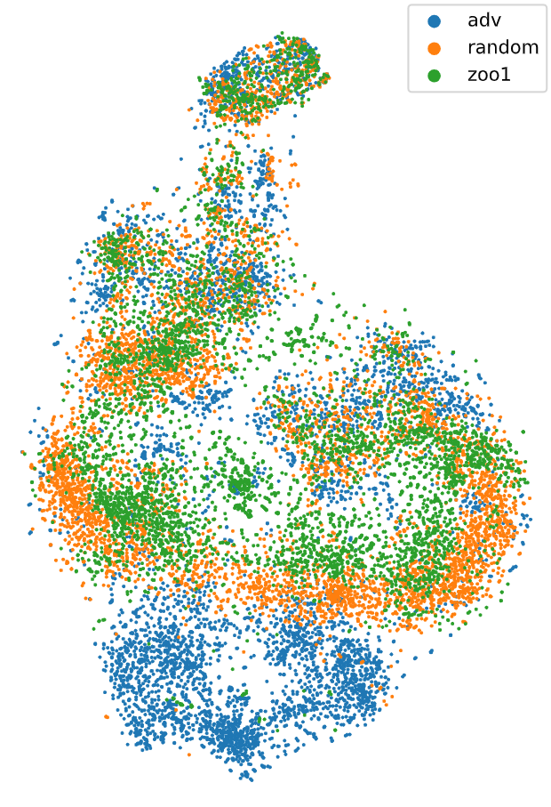

Adversarial Agents in multi-agent reinforcement learning
Adversarial attacks are a well-known phenomenon in machine learning that poses a threat to the security of many practical applications.
To attack a neural network, one adds a small pertubation to its input, which leads to a misclassification.
They have been studied extensively in the context of computer vision, and more recently in reinforcement learning (RL).
In an RL setting, perturbed observations can fool an agent with a neural network policy into taking actions that lead to poor performance
.
For example, look at the hopper on the right, where the observations have been unnoticeably perturbed, leading to a detrimental drop in the cumulative reward.
There is a multitude of methods to attack RL agents, including classical methods such as FGSM ,
and methods that exploit RL specific properties .
The majority of these methods assume that the attacker is able to freely modify the agent's observations, which might not be possible in many cases.
However, an interesting opportunity arises in multi-agent RL (MARL) settings, where agents observe each other:
An attacker might take the form of an agent in MARL, whose actions directly influence the victim's observations.
This is the key idea in Gleave et al's paper "Adversarial Policies: Attacking Deep Reinforcement Learning" ,
who train adversarial agents that attack victims in several two-player games.
In this post, we will take a closer look at those adversarial agents, analyze how they work, and discuss ways to defend against them.
Setting things up
We will train adversarial agents on four different mujoco environments, each of which implements a two-player, zero-sum game.
Originally, these environments have been introduced in Bansal et al's paper "Emergent Complexity via Multi-Agent Competition" ,
who trained several agents competing in each environment.
In the visualizations in the rest of the article, we will see the behavior of the first pretrained agent.
For our experiments, we will focus on the following four:
The score you see above has the form #wins - #losses - #draws, from the perspective of one of the agents, which we will call the attacker.
Right now, the attacker acts according to its pretrained policy, but later we will train an adversarial policy to act in its place.
- In You Shall Not Pass the attacker is the red agent, who wins if the blue agent falls to the ground before it reaches the red line, and loses otherwise.
-
In Kick and Defend the attacker is the blue agent, who wins if the red agent fails to score, but the ball remains within the vicinity of the goal.
The blue agent loses if a goal is scored, otherwise it is a draw.
- In Sumo the attacker is the blue agent. If the agents had contact, and one of the falls to the ground or outside the arena, that agent loses. A draw is declared on timeout or premature stumbling.
Training an adversarial agent
While training the attacker, we keep the victim's policy fixed.
This is not an unrealistic assumption, as in practice neural networks are often frozen before deployment, in order to avoid performance degradation due to retraining.
Additionally, this simplifies our training setup, because our victim can be "absorbed" into the environment, by incorporating the victim's policy into the transition function.
In pseudocode, this could look something like this:
class AttackerEnv(gym.Env):
""" An environment that wraps a multi-agent environment and inserts
the victim's actions at index 1. """
...
def step(self, action):
# Get the action the victim would take in the current state
victim_action = self.victim_policy(self._get_obs())
# Give the attacker's action as well as the victim's action
# to the wrapped multi-agent environment
obs, reward, done, info = self.env.step([action, victim_action])
# Return the observation and reward of the attacker
return obs[0], reward[0], done, info
Note that the environment now takes in only an action from the attacker, and returns only the attacker's observation and reward, meaning...
The attacker can be trained in a single-agent environment.
Our goal for the attacker is simply to win as much as possible.
Therefore, we don't use the reward function of the environment, but reward the attacker when it wins, and penalize it otherwise.
We do this by giving a sparse reward at the end of the episode, either 1000 or -1000 depending on the game result.
With the environment and reward in place, we can use any standard RL algorithm to train our attacker.
In our case, we used the PPO implementation of stable baselines 3
with the hyperparameters provided in .
Training results
The videos above show the adversaries at work.
As you might notice, the success of our attack depends on the environment.
In You shall not pass, the attacker is able to consistently score wins (it wins 71% of the games).
It does this not by obstructing the victim, or by any other interpretable means, but by falling to the ground and moving seemingly at random.
This shows that the attacker produces adversarial observations, because the victim cannot cross the line despite any obstruction.
This is not the case when placing the victim against a random policy, or one that does not exert forces on its joints at all (the zero policy).
In Kick and Defend, the attacker achieves even better results against the victim (winning 81% of the games).
While the behavior of the attacker seems similar to the one in You Shall Not Pass, the effect it has on the victim is different.
Instead of falling over, the victim seems to forget to kick the ball, resulting in a loss after the time limit is reached.
Again, pairing up the victim against the random policy or the zero policy, it performs as expected.
In Sumo, our attacks work fairly well, but the results differ a lot between the victims.
While our first attacker can score a 70% winrate, the second and third only win 12% and 36%, respectively.
Because the attacker cannot win when falling over, it learns to kneel in a stable position, while moving its arms.
The constraint of staying upright limits the impact the attacker can have on the victim, which could explain the high variance in the attackers performance.
In Sumo (ants) our attack did not work against any of the victims.
This is in line with the research on adversarial attacks, which shows that they work better in higher-dimensional input spaces .
In comparison, the state of an ant agent is 15-dimensional, while that of a human is 24-dimensional.
Still, we can observe that the attacker seems to stall the victim, while almost not moving itself.
This is a vastly differnt behavior than that of the pretrained agents.
All in all, we can gather two key takeaways:
-
It is easy to create adversarial agents by simply training to minimize the success of a victim.
-
The success of the attack depends on how much control the attacker has over the victim's observation space
(or in other words, the effective dimensionality of the manipulable subspace).
While the results we presented here are purely qualitative and visual, we provide a complete table of winrates in the appendix.
Still, you might be unsatisfied, because while we have seen that the attacks work, we have not seen how they work.
How do the adversarial attacks work?
We suspect that the easiest way to win against a well-trained agent in a short time is to create observations that the defender has not encountered during training.
The attack aims to create inputs for the defender in an observation space that the defender has not well generalized before.
To validate if this assumption is correct we are required to open up the black box of the defender and analyze its inner workings.
One intuitive approach to achieve this is to examine the activations of semantically similar observations, which are expected to be close to each other in the network's representation.
By analyzing the activations of the defender during the game, we can gain insight into how it processes different observations.
To visualize the activations of the defender in a 2D space, we used the t-Distributed Stochastic Neighbor Embedding (T-SNE) algorithm, which is a dimensionality reduction technique that preserves the local structure of the data.
This allows us to gain a better understanding of how the defender perceives the game environment and how it responds to different stimuli.

TSNE visualization of the activations of the defender's policy network during the game.
The T-SNE visualization shows that the attacker is able to create observations that stimulate the defender differently than the Zoo models.
As this is a strictly qualitative analysis, we cannot draw any numeric conclusions from this visualization.
Therefore we also performed a statistical analysis of the defender's activations.
This analysis is done by modeling the defender's activations when playing against the one of the Zoo models as a Gaussian mixture model.
When comparing the activations induced by the other Zoo models we can observer that there is a weak positive log likelihood, that these activations where produced by the same model.
However in most of the cases it was strongly unlikely, that the activations induced by the adversarial agent were produced by the same model.
How can we defend against adversarial agents?
As we have seen, the enabler for adversarial attacks is the manipulation of the victim's observation space.
Therefore, how can we defend against such attacks?
A super simple solution is to mask out the part of the observations that contains information about the attacker.
For masking, we fix the values after initializing the agents within the environment so that they stay natural, unlike setting them to 0.
This technique works extremely well for "You Shall Not Pass," where the win rate against the adversary skyrockets to 99.2%.
However, it does come at a cost: the performance against the pretrained opponent drops from 50.9% to 19.3%.
Additionally, this method of masking does not work for other environments whose observations contain positions relative to the victim.
When the victim moves, it still observes the same relative position, which we believe is detrimental to its performance.
Besides this very simple method, there are many other ways to defend against adversarial agents.
One idea is finetuning a policy against adversarial attacks, such as in ,
where the authors increase a policies robustness by finetuning against observations attacked with FGSM.
Similarly, in , the victim agents are finetuned against the attackers,
which increases robustness while the attack can still be reapplied.
A related approach is co-training with adversarial agents.
Here, the victim is trained at the same time as an adversary which can manipulate the victim's observations, building robustness from the ground up.
In , the co-trained adversarial agent applies forces to the victim in order to destabelize it.
In , the authors co-train an optimal adversary represented by a neural network that outputs an observation.
This might be infeasible in large observation spaces, and is improved upon in , who split this network into an actor and director,
which craft a state perturbation and propose a policy perturbation direction, respectively.
Another approach is to co-train with adversarial agents, which is done in , where the authors train a victim with a diverse population of different opponents.
Lastly, there are several regularization methods, such as and .
Discussion
In the high dimensional environments (sumo humans, kick and defend, you shall not pass) our experiments showed that adversarial policies can prove as strong opponents in only a fraction of the training time.
Despite the success on these environment, in the low dimensional environment (sumo ants) the adversarial agent could not prove successfull very often.
This makes sense, since the combinatorical explosion of possible states in the higher dimensional environments makes it more likely, that there are observation states which were not visited in the training process and not generalized yet.
Appendix
Tournament
You Shall Not Pass
|
Adv1 |
ZooO1 |
Random |
Zero |
| ZooV1 |
38.4 |
50.9 |
98.0 |
98.7 |
| ZooM1 |
99.2 |
19.3 |
98.2 |
98.3 |
Kick and Defend
|
Adv1 |
Adv2 |
Adv3 |
ZooO1 |
ZooO2 |
ZooO3 |
Random |
Zero |
| ZooV1 |
40.0 |
38.6 |
41.4 |
55.0 |
57.9 |
57.3 |
66.7 |
59.7 |
| ZooV2 |
29.7 |
31.9 |
30.9 |
33.9 |
35.8 |
34.4 |
43.9 |
41.2 |
| ZooV3 |
16.8 |
17.5 |
16.7 |
36.8 |
36.7 |
36.6 |
65.0 |
63.8 |
|
| ZooM1 |
0.1 |
3.3 |
0.2 |
3.5 |
0.8 |
0.0 |
0.0 |
0.0 |
| ZooM2 |
0.8 |
0.0 |
0.2 |
3.1 |
0.0 |
1.4 |
1.6 |
0.0 |
| ZooM3 |
0.1 |
2.8 |
0.0 |
0.0 |
0.1 |
0.0 |
1.2 |
0.3 |